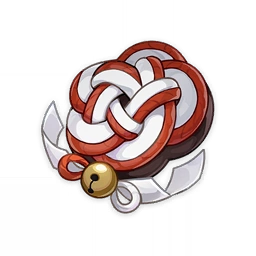
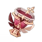

|
Reminescência Nostálgica
|
Flor da Vida |

|
HP |
Bônus de 2 Peças:ATQ +18%.Bônus de 4 Peças: Ao lançar sua
Habilidade Elemental, se a Energia Elemental do Personagem for maior ou igual a 15, ele perderá 15
pontos de Energia Elemental e nos próximos 10s, seus Ataques Normais, Ataques Carregados, Ataques
Imersivos terão um aumento de 50% de Dano. Esse efeito só pode ser desencadeado uma vez dentro desse
intervalo de tempo.
|
Domínnio: Jardim do Outono |
|
Último Juramento do Gladiador
|
Cálice de Erátema |

|
ATQ% |
Bônus de 2 Peças:ATQ +18%.Bônus de 4 Peças: Se o portador deste
conjunto de artefato usar uma Espada, Espadão ou Lança, aumenta o Dano de seus Ataques Normais em
35%.
|
Dropado por Chefes Semanais no Nível do Mundo 2+
Dropado por Chefes Normais no Nível do Mundo 3+
Relicário do Domínio - Categoria II
|